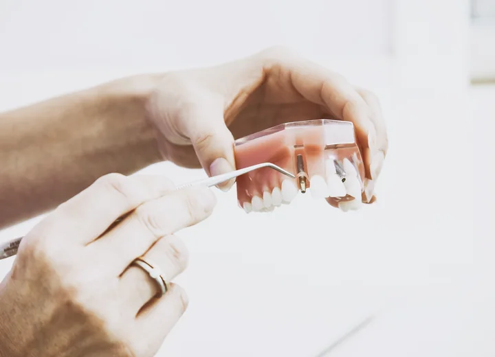
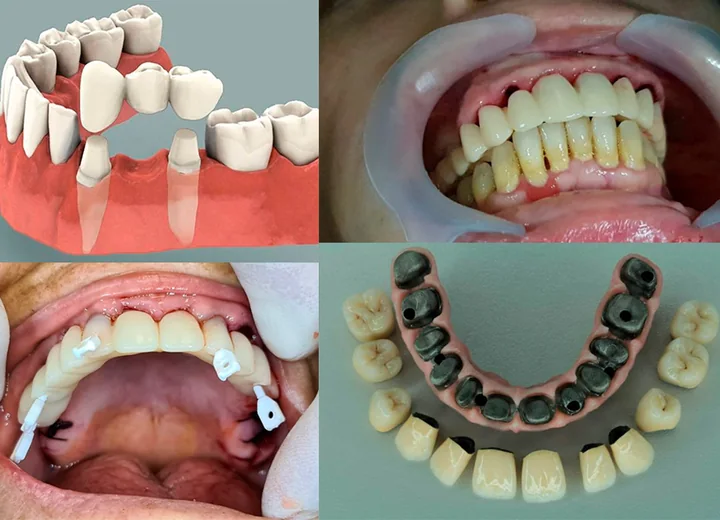
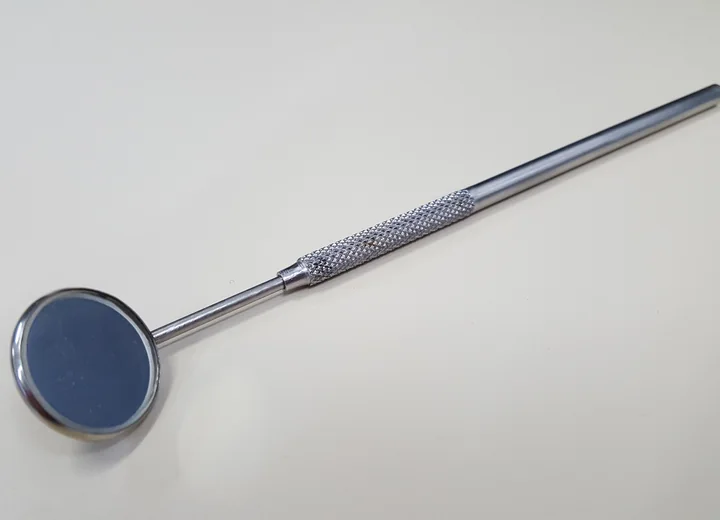
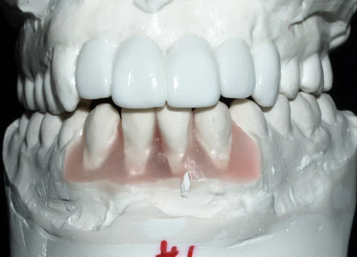
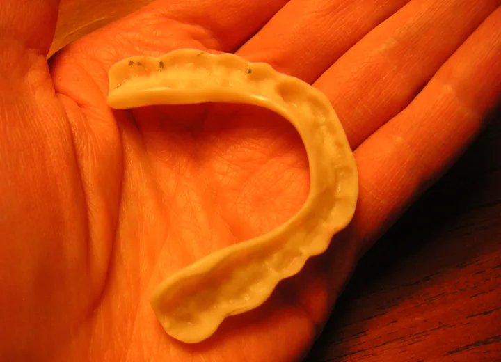
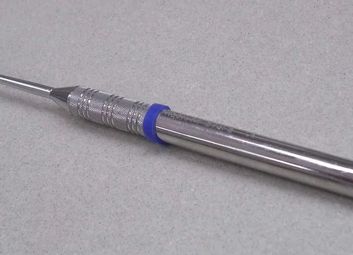

Implantes dentários
Opção para reposição de dentes perdidos, sempre com avaliação e planejamento individual.

Dentista em Limeira - SP
Atendimento odontológico com planejamento, acolhimento e foco em devolver confiança para sorrir, mastigar e viver melhor.
Sobre a profissional
A Dra. Denise Knupp atua em Limeira com foco em atendimento odontológico individualizado, unindo escuta, planejamento e orientação clara para cada paciente.
O site organiza as principais informações de contato, localização e tratamentos para facilitar o primeiro passo de quem busca recuperar saúde bucal, função e segurança ao sorrir.
Tratamentos
****Os serviços abaixo devem ser validados com a cliente antes da publicação final.****
Opção para reposição de dentes perdidos, sempre com avaliação e planejamento individual.

Alternativas para devolver função, conforto e harmonia ao sorriso de acordo com cada caso.

Cuidados voltados à aparência do sorriso com indicação feita após avaliação profissional.

Prevenção, acompanhamento e procedimentos essenciais para manter a saúde bucal em dia.

Orientação e acompanhamento para sintomas relacionados ao apertamento e desgaste dental.

Primeiro passo para entender necessidades, possibilidades e próximos cuidados.

Jornada do paciente
O paciente chama pelo WhatsApp e informa sua principal necessidade.
A consulta permite entender o caso e indicar exames ou próximos passos.
O tratamento é orientado conforme condição bucal, objetivos e possibilidades.
O cuidado continua com retornos, orientações e manutenção quando necessário.
Dúvidas frequentes
Escolha uma pergunta para ver uma orientação geral. Casos clínicos devem ser avaliados presencialmente.
As respostas são informativas e não substituem avaliação odontológica.
Localização
Primeiro passo
Entre em contato pelo WhatsApp para receber orientação inicial e combinar uma avaliação.